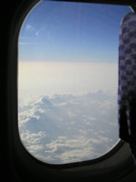
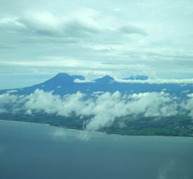

Kesan pertama Trish
Kami sudah tiba di Jakarta! The first thing I noticed as the plane began to descend was the dome of black smog over the city. There are around 18 million people in Jakarta each day. Some live outside the city and commute, but that's still close to the entire population of Australia. And that means banyak polusi dan banyak lalu lintas.
 Reproduced with the permission of Jim and Robyn Nottingham
We claimed our bagasi, negotiated customs and the airport no worries, and found someone holding a sign in the Ruang Kedatangan with 'Mr Daniel and Ms Tris' on it. (There's no 'sh' in Indonesian, so people are having trouble with my name – it comes out something between Tris and Tris-yeh. Hehehe …)
Reproduced with the
permission of Roy Indrawan
Asikin Soerja Djanegara
We then stood around for a while in INCREDIBLE kelembaban while our guide, Ari, talked to some guys in uniform. Waiting around is something we have to get used to apparently. We were warned before we left that jam karet is a way of life here. Even planes don't operate on schedule and sometimes just wait until they fill up before they fly. Got a bit worried when they took our baggage, but it was all OK. They just followed us and Ari to the mini-van, carrying our luggage for us. Ari tipped them and they vanished.
Reproduced with the
permission of Jim and
Robyn Nottingham
VERY relieved to find the van was air-conditioned as I was very sweaty by then. There was a driver as well as Ari. We talked a bit to Ari (mulai berlatih bahasa Indonesia) and the driver – they laughed at us a bit but were very happy we were trying to speak their language. Looking out the window was just too fascinating, though, and most of our conversations were limited to 'apa itu?' and 'itu …' with a few wah and aduh and astaga thrown in. (Daniel likes saying astaga cos he reckons it's like 'crikey' which he thinks is cool for some reason). But wah there were a lot of things to say astaga about!
Reproduced with the
permission of
Dr Phillip Mahnken
First really crazy thing was this MASSIVE billboard (I have never seen one so big!) for a huge international clothing company (think designer label). You wouldn't think in a developing country that it was worth it, but there is a small percentage of VERY rich people in Indonesia, and even a small percentage of 220 million is still a LOT. Anyway, underneath this sign was what Ari called gubuk orang miskin made out of cardboard and scrap metal and stuff. We saw more of these gubuk liar (as Iwan Fals calls them in his song Jakarta) by the river on our way into town.
Reproduced with the
permission of Lisa Djanegara
The contrast between rich and poor continued. One minute we're seeing shanty towns, and the next we see this massive shopping mall with adverts for every designer label you can imagine. And there are rows and rows of tiny food stalls next to them. Eight out of ten vehicles on the road look like they should be in the scrap yard, and the other two are Mercedes or BMWs. There are old Dutch colonial buildings in some areas and huge modern skyscrapers. It is luar biasa. Tidak masuk akal.
Klik di sini untuk melihat album foto pertama saya.
Text alternative.

{kind=link}
{kind=link}
{kind=link}
{kind=link}
{kind=link}
{kind=link}
{kind=link}
{kind=link}
{kind=link}
{kind=link}
Read about Monas in the pojok budaya.
Best words to describe Jakarta for me:
- banyak lalu lintas
- macet
- banyak orang
- ramai
- kekontrasan
- besar
- makanan di mana-mana